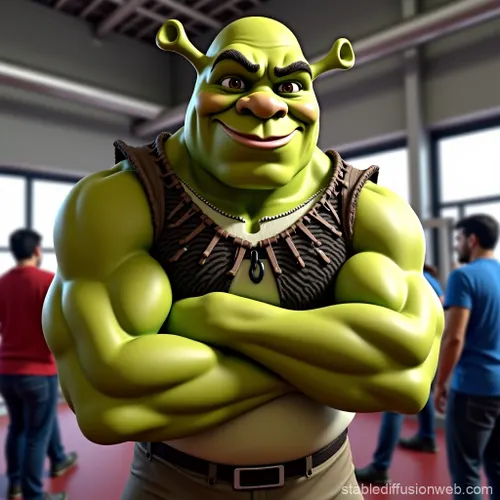

À propos de moi
Passionné par l'informatique

Dierickx Simon
Étudiant en Informatique - EPHEC
Je suis un étudiant passionné, actuellement en formation à l'EPHEC. Mon parcours combine des compétences en développement logiciel et une expérience pratique en électronique acquise chez Arsalis. Je suis constamment à la recherche de nouveaux défis et d'opportunités pour approfondir mes connaissances techniques.
Formation
EPHEC - Informatique
Expérience
Arsalis - Électronique
Projets
70h valorisables
Mes Compétences
Développement Web
JavaScript
HTML5
CSS3
Python
Compétences Techniques
Soft Skills
Travail d'équipe
Résolution de problèmes
Communication
Apprentissage continu
Mon Parcours
EPHEC - Études en Informatique
2023 - PrésentFormation complète en développement logiciel, algorithmique et systèmes d'information. Participation active aux hackathons et projets collaboratifs.
Arsalis - Job Étudiant
2023 - PrésentJob étudiant en électronique : préparation de câbles, soudure de composants, prises de données sur amplificateurs pour analyse et diagnostic.
Formations OpenClassroom
2022 - 2024Formations en JavaScript et Python pour approfondir mes compétences en développement web et programmation orientée objet.
Hackathon EPHEC
2024Participation à un hackathon de 48 heures. Développement d'un projet innovant en équipe avec des contraintes de temps et de ressources.
Mes Centres d'Intérêt
Tennis
Pratique depuis 15 ans, compétition en club et participation à des tournois locaux.
Développement Web
Passion pour la création d'interfaces modernes et l'apprentissage de nouvelles technologies.
Électronique
Intérêt pour les circuits électroniques, Arduino et les projets DIY.
Collaboration
Travail en équipe, partage de connaissances et participation à des projets open source.
Mon CV
Téléchargez mon CV détaillé pour en savoir plus sur mon parcours et mes compétences.
Télécharger mon CV